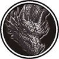

|

|
>> Содержание / Список кланов /
 Navigators Navigators
Ветер в крыльях твоего зверя может быть разным. Пьянящий ветер счастья, как при первом полете. Когда ты молод, и вместе со своим питомцем впервые покидаешь грешную землю. Счастье и восторг скрепляют вас в единый тандем. Огонь и кровь врагов делают его непобедимым. О как сладок торжествующий свист в крыльях пикирующего дракона. Враг повержен и должен быть добит, никакого сожаления и тебе не придется биться с ним еще раз. Но даже самый сильный и ловкий может оступиться - наездник прервал свои мысли, и прислушался. Ветер боли и отчаяния бил в его обожженное лицо и стонал в израненных крыльях дракона. Справедливую силу уважают даже драконы - был наш девиз. Дракон и есть живое воплощение силы, справедливости и нейтралитета.
Нейтралитет. Казалось невозможно его соблюсти в этом мире людей. Именно людей, потому что драконы уже давно не владели им. Вековая мудрость привела их к мысли использовать человека, чтобы понять и выжить в этом мире. Люди предгорий получили эту привилегию много веков назад. И стали зваться Навигаторами. Добро и зло и их вечная борьба деформировали мир. Разрушая и созидая снова и снова. Добро, не чурающееся любых средств, и зло, помогающее в малом, чтоб достигнуть главной цели. Будь они прокляты! Люди устали от их битвы, от бесконечной не прекращающейся войны. Все знали, что если устал, и тебе есть что предложить, будь то камни для драконов или твои дети для армии Навигаторов, ты найдешь спокойствие в горах. Мы стали слишком сильны - мужчина погладил по шее своего друга, и тот отозвался утробным рычанием. Зверь умирал, но у него не возникало и мысли о том, чтоб сбросить воина. Наездник покрепче ухватился за гребень, и перерезал перевязь на спине дракона. Седло с защитными пластинами для седока и притороченный к нему обломок копья полетели в низ. Черт, надо было сделать это раньше - процедил мужчина провожая взглядом обломки. Горы оборвались утесами в океан. Их родина таяла в дымке, а впереди не было будущего. Мужчина оглянулся, и прокричал: Будьте вы трижды прокляты! Ярость, боль и ненависть растаяли в безжалостном свисте ветра. Куда ты несешь меня Златогривый? И не дождавшись ответа снова унесся мыслями в прошлое. Слава Навигаторам! Слава Драконам! Скандирующие толпы на улицах в весенний день Первого полета уже который год стекались к драконьим башням. Клан имел представительство в каждом городе и не чувствовал недостатка в приверженцах. А главную цитадель Город в облаках приходилось постоянно достраивать и расширять. Город в облаках - наша гордость и оплот, казалось нет ничего более незыблемого и вечного.
Он продержался всего сутки...
Официальный сайт клана: http://bk.navigatordragons.ru
|
 |
|